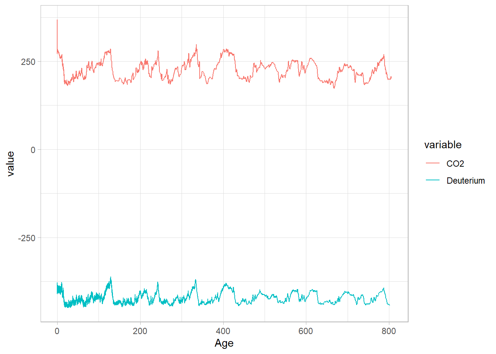
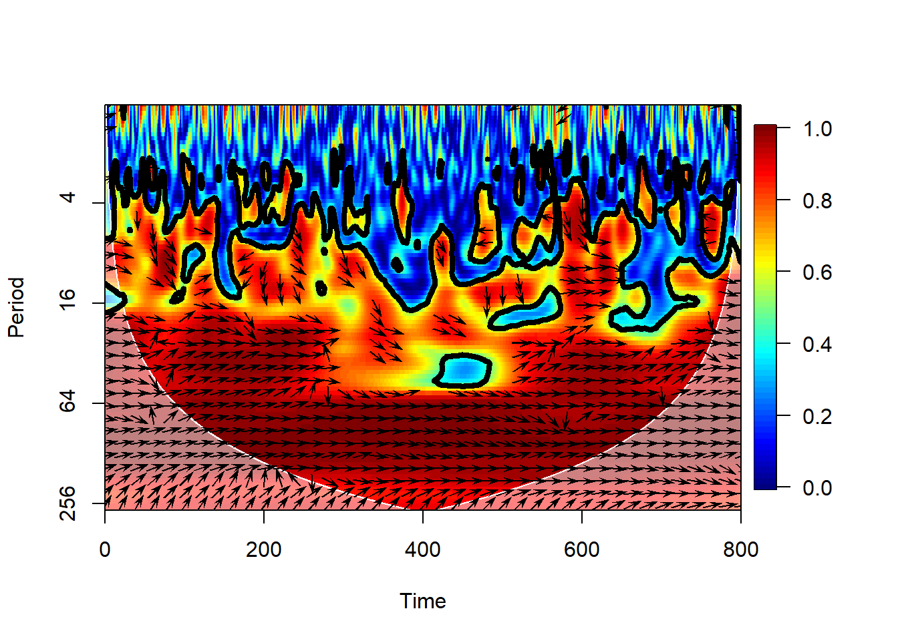

6.5 Bringing the datasets together
We see very similar Ice Ages as in the deuterium data and of course a precipitous rise since the Industrial Revolution. To plot the two series side by side, we’ll merge them into one data frame
dDdfnew <- dDdf %>%
rename(Age = AgeKy) %>%
select(Age, Deuterium)
co2_dD <- merge.data.frame(co2df, dDdfnew, all = T)
co2_dD_long <- gather(co2_dD, variable, value, -Age)
co2_dD_long <- na.omit(co2_dD_long)
ggplot(data=co2_dD_long, mapping = aes(x=Age, y=value, color=variable)) + geom_line() +
theme_light()
By default, the ggplot assumes commensurate units, which is not really the case here. Fear not, we can just standardize the series:
co2_dD_scaled <- co2_dD %>%
mutate(across(-Age, ~ as.numeric(scale(.x)), .names = "{.col}_z")) %>%
select(Age, CO2_z, Deuterium_z) %>%
rename(CO2 = CO2_z) %>%
rename(Deuterium = Deuterium_z) %>%
gather(key=variable, value = value, -Age) %>%
na.omit()
ggplot(data=co2_dD_scaled, mapping = aes(x=Age, y=value, color=variable)) +
geom_line() +
labs(title = "EPICA Dome C CO2 and Deuterium",
x="Age (ky BP)",
y="z-score") +
theme_light()
We seek to understand potential lead/lag relationships between those two series. Before that, a brief primer: the temperature proxy \(\delta\)D is measured on the ice, whereas CO2 is measured in the air trapped in the ice. Because bubbles close only progressively as the firn gets compacted, the air can be younger than the surrouding ice by several hundred years. The ice core community has worked diligently on this for decades and have made very clever adjustments to correct for this effect, but that is to be kept in mind when comparing those two data streams.
6.5.1 Standardization
With that in mind, let us interpolate this new record and merge the two.
CO2.Age.interp <- seq(ceiling(min(co2df$Age)), floor(max(co2df$Age)), by=0.5)
CO2.interp.df <- data.frame("Age" = CO2.Age.interp,
"CO2" = rep(NA, length(CO2.Age.interp)))
co2df2 <- merge.data.frame(co2df, CO2.interp.df, all = T)
head(co2df2[is.na(co2df2$CO2),])## Age CO2
## 62 0.0 NA
## 201 0.5 NA
## 225 1.0 NA
## 241 1.5 NA
## 259 2.0 NA
## 264 2.5 NAco2df3 <- co2df2 %>%
mutate(CO2.interp = approx(Age, CO2, Age)$y) %>%
dplyr::filter(Age %in% CO2.Age.interp) %>%
select(Age, CO2.interp)
interp.CO2.dD <- merge(co2df3, dDdf4, all=T)
head(interp.CO2.dD)## Age CO2.interp D.interp
## 1 0.0 312.7155 NA
## 2 0.5 282.1503 NA
## 3 1.0 277.8846 -398.6369
## 4 1.5 279.2627 -398.3863
## 5 2.0 277.9966 -401.5101
## 6 2.5 277.8299 -394.87196.5.2 Coherency
Now we can apply wavelet transform coherency to identify phase relationships between the two series at various scales:
# Wavelet coherence; nrands should be large (>= 1000), using 100 for speed
wtc1 <- wtc(d1=co2df3[1:(dim(co2df3)[1]-10),], d2=dDdf4, nrands=100, quiet = TRUE)
# Plot wavelet coherence and phase difference (arrows)
# Make room to the right for the color bar
par(oma=c(0, 0, 0, 1), mar=c(5, 4, 4, 5) + 0.1)
plot(wtc1, plot.cb=TRUE,plot.phase = TRUE)
This plot shows two things
the wavelet transform coherency (WTC), which may be thought of as a (squared) correlation coefficient in time-scale space: 0 if the series do not covary, 1 if they vary in perfect unison at that time and scale.
the phase angle between the two series, using a trigonometric convention (right = 0, top = 90 degrees, left = 180 degrees, bottom = -90 or + 270 degrees).
This means that on orbital timescales, the two series are essentially in phase ; there is no consistent lead or lag between the two series. This is remarkable given the dating challenges mentioned earlier, and is widely interpreted to mean that on such timescales, atmospheric CO2 is a part of a positive feedback loop amplifying orbitally-triggered changes in temperature. However, the variance of this angle is fairly high, and by this test it does not register as a very consistent signal. Lastly, note that in the anthropogenic era, atmospheric CO2 is of course a forcing (the largest climate forcing, currently), acting on much, much faster timescales for which the climate system is still catching up. You would not know it from this analysis, but it’s important to state out loud, given that climate deniers have an annoying tendency to cherry-pick the paleoclimate record in support of their feeble arguments.
6.5.3 Common power
Another consideration is that coherency is like the correlation coefficient in wavelet space: it tells you how similar two series are for a given time and scale, yet it says nothing about what fraction of the total variability is shared. This is better measured by the cross-wavelet transform (XWT), which highlights areas of high common power. Both of those, along with the original series, can be visualized with one swift function call:
xwt1 <- xwt(d1=co2df3[1:(dim(co2df3)[1]-10),], d2=dDdf4)
# Plot cross-wavelet and phase difference (arrows)
# Make room to the right for the color bar
par(oma=c(0, 0, 0, 1), mar=c(5, 4, 4, 5) + 0.1)
plot(xwt1, plot.cb=TRUE,plot.phase = TRUE)
Here we see that the orbital bands are the only ones to show up consistently throughout the record, but precession and obliquity fade before 200 ky BP in their common power, and the XWT band near 120 ka drifts to 80ka back in time. This means that, out of the large swathes of WTC one would consider “coherent”, only those areas highlighted in XWT in green-yellow are likely important. That’s where we stop the banter, though: when you are getting down to that level, you had better be a glaciologist or talk to one about what is going on in those datasets.